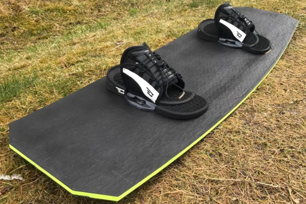
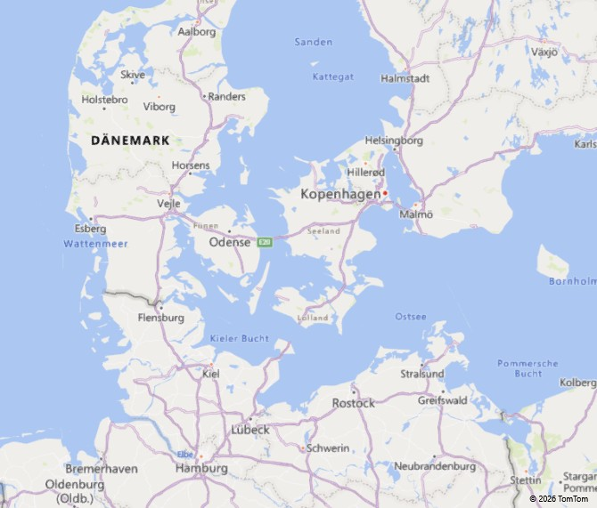

01
COMPOSITES · STRUCTURAL DESIGN
Composite-Metal Joining
Development and evaluation of joining concepts for composite-metal structures, combining CAD, FEM and mechanical testing.
View project →A selection of engineering projects spanning composite materials, lightweight structures, manufacturing and digital process development.
Development and evaluation of joining concepts for composite-metal structures, combining CAD, FEM and mechanical testing.
View project →
Investigation of hybrid nonwovens in fibre-reinforced composite manufacturing with a focus on increasing permeability.
View project →
Team-based design and hands-on manufacturing of a fibre-reinforced wakeboard using glass fibre, nonwovens and carbon fibre.
View project →
Design and hands-on manufacturing of a lightweight carbon-fibre rocket glider as part of a team-based engineering project.
View project →
Development of a structured reporting workflow connecting operational SAP data with business intelligence tools.
View project →